Tram
Guadalajara's SITEUR TEG-90: wine red, two bodies on a shared bogie.
tram 1 car, from day one
A pixel-art train for your GitHub profile that grows, changes color and speeds up with your activity.

Every part of the drawing stands for something you did on GitHub. A workflow redraws it every morning, so it changes with you.
Hover or tap a part of the train, or an item below, to match them up.
With train: auto your train moves up a model with every car it gains. You can also pick one, draw your own in the studio, or design it with AI.
Guadalajara's SITEUR TEG-90: wine red, two bodies on a shared bogie.
tram 1 car, from day one
Mexico City's NC-82: a faceted front and rubber tires.
metro-orange 2 cars, 50 contributions
São Paulo's L fleet: fluted stainless steel and a black mask.
metro-gray 3 cars, 200 contributions
The L.A. Metro's refurbished A650: a yellow front with an emergency door in the middle.
metro-yellow 4 cars, 500 contributions
The Alstom Metropolis of Guadalajara's Line 3: a dark window band and a black face.
metro-white 5 cars, 1,000 contributions
The high-speed train at the top of the line, under overhead wires.
bullet 6 cars, 2,000 contributions
The default city is built from your username, so nobody else gets your skyline. New York and Osaka come built in, and an AI can draw any other one for you.

For another city, copy the AI instructions in the playground: Medellín and Mexico City were made that way.
No token to create and no service to sign up for: a workflow in your profile repository draws the train every morning and commits the SVG.
In your profile repository (the one named after your username), create this workflow:
name: GitHub train
on:
schedule:
- cron: "0 6 * * *"
workflow_dispatch:
permissions:
contents: write
jobs:
train:
runs-on: ubuntu-latest
steps:
- uses: actions/checkout@fbc6f3992d24b796d5a048ff273f7fcc4a7b6c09 # v5
- uses: Cracksmity/git-trains@3b431f93872507bc915be9f20e8b84ed104fdbe8 # v1.1.2
- run: |
git config user.name "github-actions[bot]"
git config user.email "41898282+github-actions[bot]@users.noreply.github.com"
git add dist
git diff --cached --quiet || (git commit -m "chore: update train" && git push)Add the train to your profile README.md. It follows GitHub's light or dark theme:
<picture>
<source media="(prefers-color-scheme: dark)" srcset="dist/train-dark.svg">
<img alt="My GitHub train" src="dist/train-light.svg">
</picture>Run the workflow once from the Actions tab, and your train pulls in. Every option, from the model to profile cards, is in the README.